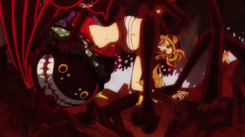
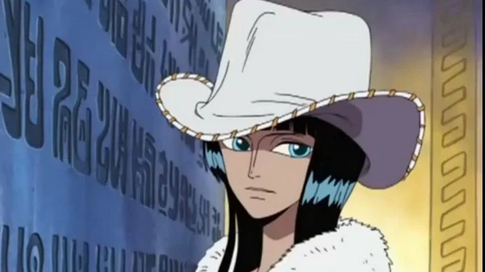
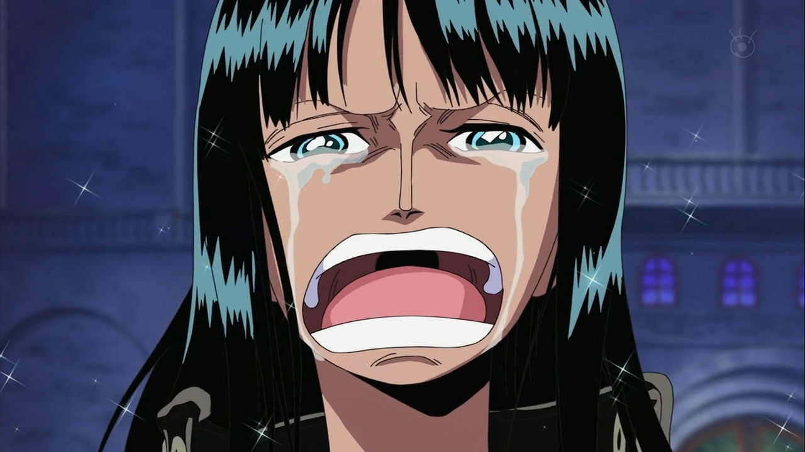

Nico robin
The Demon Child

Her story
First apparition chapter 114 - First appeared as "Miss All Sunday", agent and vice-president of the Baroque Works organization.
In the Water 7 arc, Robin was captured by the WG for being a "criminal" for the fact she can read poneglyph. She got saved by the Straw Hats after asking for help.
Her devil Fruit power

Her power allows her to grow part of her body around her.
Main occupation
- Archeologist
- Assassin
- Worked for the revolutionary
- Spy
Her past
Nico Robin was born on the island of Ohara and came from a family of archaeologists. Her mother, Nico Olvia, went out to sea to find the True History when Robin was two years old, leaving her in the care of Olvia's brother and his wife, Roji. While Robin's father was never revealed, Olvia stated that she will honor her husband's dream, she then left to study the poneglyphs. Robin later wandered into the Tree of Knowledge and was allowed to read the books held within on Clover's invitation.